35. (Л) Вступ до matplotlib. Структура графіків, figure, axes¶
Зміст лекції¶
- Навіщо візуалізація
- Встановлення та імпорт
- Перший графік
- Анатомія графіка:
Figure,Axes,Axis - Два стилі: pyplot і об'єктно-орієнтований
- Лінійний графік: кілька ліній, кольори, маркери, легенда
- Підписи, сітка, межі осей
- Діаграма розсіювання:
scatter - Стовпчикова діаграма:
barіbarh - Гістограма:
hist - Кілька графіків на одній фігурі:
subplots - Розмір фігури та компонування
- Збереження у файл:
savefig - Приклад: аналіз оцінок групи
- Типові помилки
- Підсумок
Навіщо візуалізація¶
У лекції 30 ми рахували середнє, медіану, стандартне відхилення. Але числа не завжди розповідають усю історію. Класичний приклад — чотири набори даних, у яких однакові середнє, дисперсія та кореляція:
import numpy as np
# квартет Енскомба: чотири набори точок (x, y)
x = np.array([10, 8, 13, 9, 11, 14, 6, 4, 12, 7, 5])
x4 = np.array([8, 8, 8, 8, 8, 8, 8, 19, 8, 8, 8])
y1 = np.array([8.04, 6.95, 7.58, 8.81, 8.33, 9.96, 7.24, 4.26, 10.84, 4.82, 5.68])
y2 = np.array([9.14, 8.14, 8.74, 8.77, 9.26, 8.10, 6.13, 3.10, 9.13, 7.26, 4.74])
y3 = np.array([7.46, 6.77, 12.74, 7.11, 7.81, 8.84, 6.08, 5.39, 8.15, 6.42, 5.73])
y4 = np.array([6.58, 5.76, 7.71, 8.84, 8.47, 7.04, 5.25, 12.50, 5.56, 7.91, 6.89])
for xs, ys in [(x, y1), (x, y2), (x, y3), (x4, y4)]:
corr = np.corrcoef(xs, ys)[0, 1]
print(f"mean y = {ys.mean():.2f}, std y = {ys.std():.2f}, corr = {corr:.3f}")
mean y = 7.50, std y = 1.94, corr = 0.816
mean y = 7.50, std y = 1.94, corr = 0.816
mean y = 7.50, std y = 1.94, corr = 0.816
mean y = 7.50, std y = 1.94, corr = 0.817
За статистикою набори не відрізнити. А на графіку вони зовсім різні:
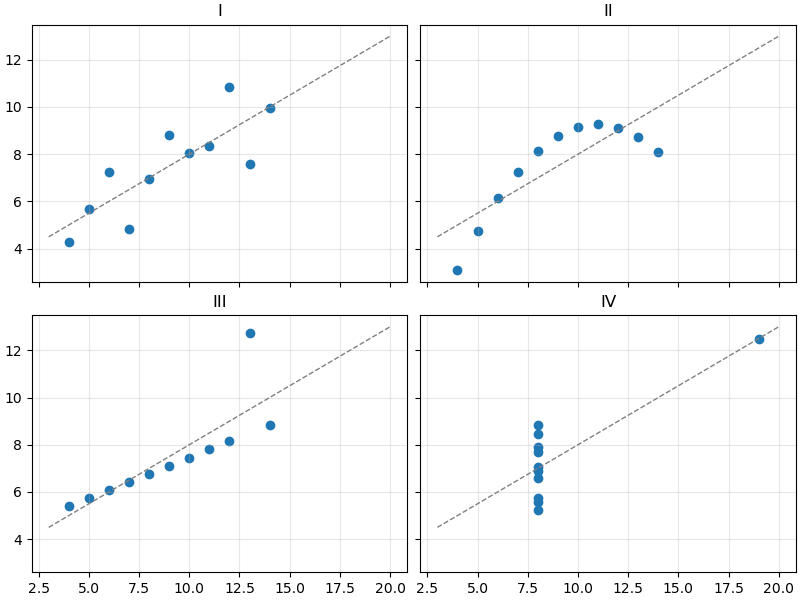
- I — звичайна лінійна залежність із шумом;
- II — крива, а не пряма;
- III — ідеальна пряма, яку зіпсував один викид;
- IV — усі точки в одному стовпчику, а «кореляцію» створює одна точка.
Висновок: перш ніж рахувати — подивіться на дані. Графік швидко показує тренди, викиди, помилки в даних і форму розподілу.
matplotlib — базова бібліотека візуалізації в Python. На ній побудовані pandas (df.plot()), seaborn та багато інших інструментів. Вона вміє малювати лінійні графіки, діаграми, гістограми, теплові карти, 3D — і зберігати результат у PNG, SVG, PDF.
Встановлення та імпорт¶
Загальноприйнятий імпорт:
matplotlib.pyplot — модуль із функціями для створення графіків. Скорочення plt таке ж стандартне, як np для NumPy.
Перевірка версії:
Перший графік¶
import matplotlib.pyplot as plt
hours = [0, 3, 6, 9, 12, 15, 18, 21]
temps = [4, 3, 5, 11, 15, 16, 12, 7]
plt.plot(hours, temps)
plt.show()
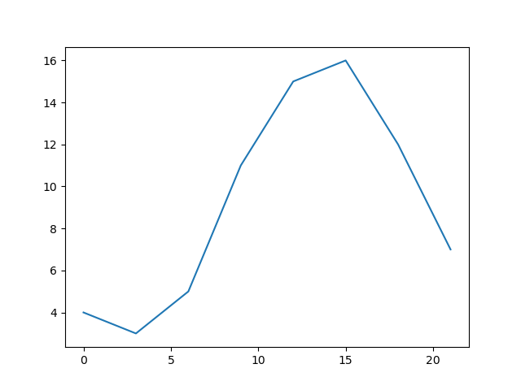
plt.plot(x, y)— з'єднує точки(x[i], y[i])лініями;plt.show()— відкриває вікно з графіком. Програма зупиняється, поки вікно не закрите.
Якщо передати лише один список, matplotlib візьме як x індекси 0, 1, 2, ...:
matplotlib приймає і списки, і масиви NumPy. На практиці дані майже завжди — масиви:
import matplotlib.pyplot as plt
import numpy as np
x = np.linspace(0, 2 * np.pi, 100)
y = np.sin(x)
plt.plot(x, y)
plt.show()
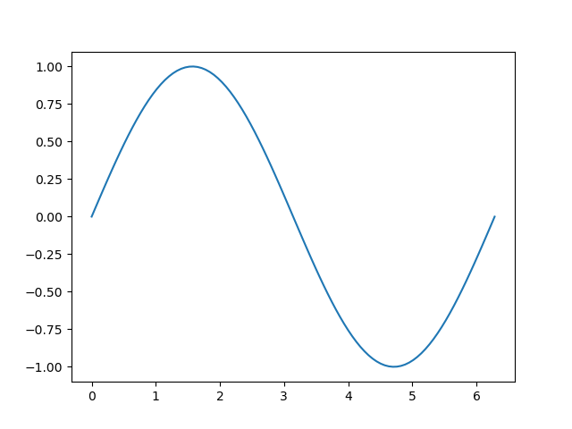
Лінія здається плавною, бо ми взяли 100 точок. Спробуйте np.linspace(0, 2 * np.pi, 8) — побачите ламану.
Jupyter та IDE
У Jupyter Notebook графік показується під клітинкою автоматично, plt.show() можна не писати. У звичайному скрипті .py без plt.show() вікно не з'явиться.
Анатомія графіка: Figure, Axes, Axis¶
Кожен графік у matplotlib — це дерево об'єктів:
flowchart TD
F["Figure<br/>(все полотно / вікно)"] --> A1["Axes<br/>(одна система координат)"]
F --> A2["Axes"]
A1 --> X["XAxis<br/>(вісь x: ticks, label)"]
A1 --> Y["YAxis<br/>(вісь y: ticks, label)"]
A1 --> T["title"]
A1 --> L["Line2D, Rectangle, ...<br/>(лінії, стовпчики, точки)"]
A1 --> G["Legend"]Figure— «аркуш паперу» або вікно. Має розмір, фон, може містити кілька графіків.Axes— один графік: область із системою координат, у якій малюються дані. Саме вAxesє методиplot,bar,set_titleтощо.Axis— одна вісь (x або y) усерединіAxes: поділки (ticks), підписи поділок, назва осі.- Artist — загальна назва всього, що видно на фігурі: лінії, текст, прямокутники, легенда.
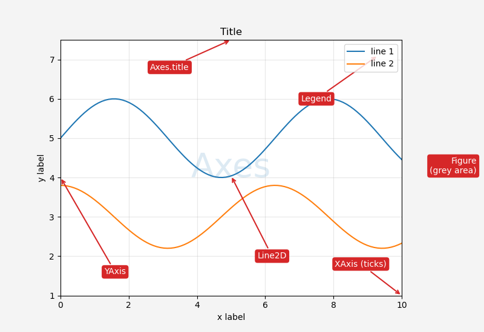
Axes ≠ Axis
Назви схожі, але це різні речі. Axes (множина від «axis») — цілий графік із двома осями. Axis — одна вісь. Фігура з двома графіками має два Axes і чотири Axis.
Два стилі: pyplot і об'єктно-орієнтований¶
matplotlib має два способи писати той самий код.
1. pyplot-стиль (неявний). Функції plt.* самі знаходять «поточну» фігуру та «поточний» Axes і малюють на них:
import matplotlib.pyplot as plt
hours = [0, 3, 6, 9, 12, 15, 18, 21]
temps = [4, 3, 5, 11, 15, 16, 12, 7]
plt.plot(hours, temps)
plt.title("Temperature")
plt.xlabel("Hour")
plt.ylabel("Temperature, C")
plt.show()
2. Об'єктно-орієнтований стиль (явний). Створюємо фігуру та Axes явно і викликаємо методи в об'єкта ax:
import matplotlib.pyplot as plt
hours = [0, 3, 6, 9, 12, 15, 18, 21]
temps = [4, 3, 5, 11, 15, 16, 12, 7]
fig, ax = plt.subplots()
ax.plot(hours, temps)
ax.set_title("Temperature")
ax.set_xlabel("Hour")
ax.set_ylabel("Temperature, C")
plt.show()
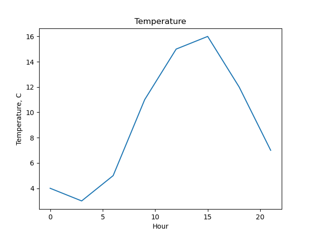
Результат однаковий. plt.subplots() повертає кортеж (Figure, Axes).
Відповідність назв:
| pyplot | об'єктний стиль |
|---|---|
plt.plot(...) |
ax.plot(...) |
plt.title("...") |
ax.set_title("...") |
plt.xlabel("...") |
ax.set_xlabel("...") |
plt.ylabel("...") |
ax.set_ylabel("...") |
plt.xlim(0, 10) |
ax.set_xlim(0, 10) |
plt.legend() |
ax.legend() |
plt.grid() |
ax.grid() |
Який стиль обрати
pyplot зручний для швидкого графіка «на одну хвилину». Для всього іншого — кількох графіків на фігурі, функцій, що малюють графік, вбудовування в PySide6 — використовуйте об'єктний стиль: завжди зрозуміло, на якому Axes ви малюєте. Далі в курсі — лише об'єктний стиль.
Лінійний графік: кілька ліній, кольори, маркери, легенда¶
Кожен виклик ax.plot додає нову лінію на той самий Axes. Кольори призначаються автоматично по черзі.
import matplotlib.pyplot as plt
months = [1, 2, 3, 4, 5, 6, 7, 8, 9, 10, 11, 12]
kyiv = [-3.5, -2.4, 2.1, 9.4, 15.6, 19.0, 20.8, 20.0, 14.8, 8.6, 2.7, -1.6]
lviv = [-2.9, -1.8, 2.3, 8.3, 13.6, 16.6, 18.2, 17.6, 13.2, 8.3, 3.3, -1.1]
odesa = [-0.9, -0.3, 3.4, 9.3, 15.5, 20.0, 22.8, 22.4, 17.3, 11.5, 5.9, 1.3]
fig, ax = plt.subplots()
ax.plot(months, kyiv, label="Kyiv")
ax.plot(months, lviv, label="Lviv")
ax.plot(months, odesa, label="Odesa")
ax.set_title("Average monthly temperature")
ax.set_xlabel("Month")
ax.set_ylabel("Temperature, C")
ax.legend()
plt.show()
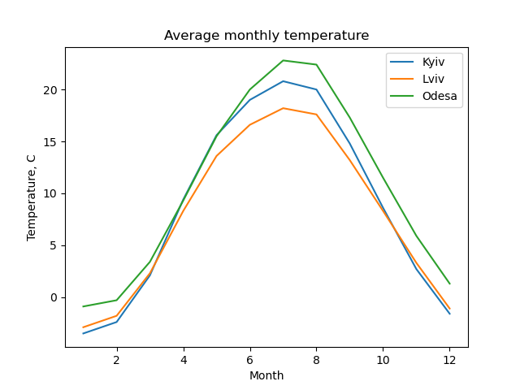
label="..."— підпис лінії для легенди;ax.legend()— показує легенду. Безlabelлегенда буде порожньою (і matplotlib видасть попередження).
Оформлення лінії¶
Основні параметри plot:
| Параметр | Скорочення | Приклади значень |
|---|---|---|
color |
c |
"red", "tab:blue", "#1f77b4", "0.5" (відтінок сірого) |
linestyle |
ls |
"-", "--", ":", "-.", "none" |
linewidth |
lw |
1, 2.5 |
marker |
— | "o", "s", "^", "x", "." |
markersize |
ms |
4, 8 |
alpha |
— | від 0 (прозоро) до 1 |
import matplotlib.pyplot as plt
import numpy as np
x = np.arange(10)
fig, ax = plt.subplots()
ax.plot(x, x, color="tab:blue", linestyle="-", marker="o", label="solid + o")
ax.plot(x, x + 2, color="tab:orange", linestyle="--", marker="s", label="dashed + s")
ax.plot(x, x + 4, color="tab:green", linestyle=":", linewidth=3, label="dotted, lw=3")
ax.plot(x, x + 6, color="tab:red", linestyle="-.", marker="^", markersize=10, label="dashdot + ^")
ax.plot(x, x + 8, color="0.4", linestyle="none", marker="x", label="markers only")
ax.legend()
plt.show()
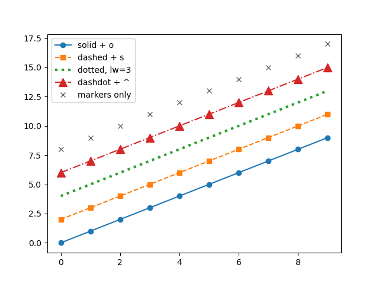
Є й коротка форматна рядкова нотація: "ro--" = червоний (r), маркер-коло (o), пунктир (--). Її часто можна побачити в прикладах:
import matplotlib.pyplot as plt
fig, ax = plt.subplots()
ax.plot([1, 2, 3, 4], [1, 4, 9, 16], "ro--")
plt.show()
Проте іменовані параметри (color=, marker=, linestyle=) читаються краще.
Кольори tab:*
Палітра за замовчуванням — tab:blue, tab:orange, tab:green, tab:red, tab:purple, tab:brown, tab:pink, tab:gray, tab:olive, tab:cyan. Якщо задаєте кольори вручну — беріть з неї: ці кольори добре розрізняються між собою.
Підписи, сітка, межі осей¶
import matplotlib.pyplot as plt
import numpy as np
x = np.linspace(-2, 2, 200)
fig, ax = plt.subplots()
ax.plot(x, x ** 2, label="x^2")
ax.plot(x, x ** 3, label="x^3")
ax.set_title("Power functions")
ax.set_xlabel("x")
ax.set_ylabel("y")
ax.set_xlim(-2, 2)
ax.set_ylim(-4, 4)
ax.grid(True, alpha=0.3)
ax.axhline(0, color="black", linewidth=0.8)
ax.axvline(0, color="black", linewidth=0.8)
ax.legend(loc="upper left")
plt.show()
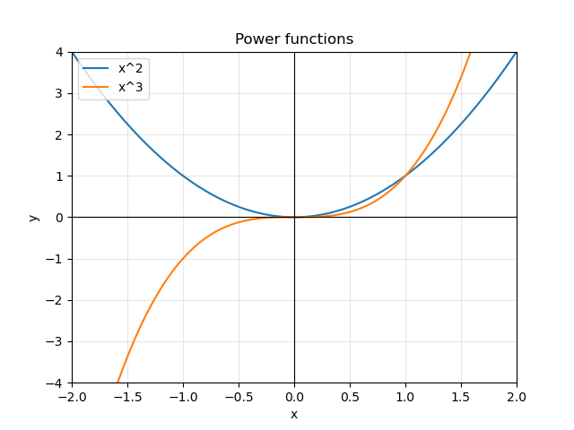
set_xlim(a, b)/set_ylim(a, b)— видимий діапазон осі. За замовчуванням matplotlib підбирає його сам під дані;grid(True)— сітка;alpha=0.3робить її блідою, щоб не заважала даним;axhline(y)/axvline(x)— горизонтальна / вертикальна лінія через увесь графік (зручно для нуля, порогу, середнього);legend(loc=...)— позиція легенди:"upper left","lower right","center","best"(за замовчуванням).
Усе одним викликом: ax.set¶
Кілька налаштувань можна задати одним викликом — імена параметрів збігаються з методами без set_:
import matplotlib.pyplot as plt
fig, ax = plt.subplots()
ax.plot([1, 2, 3, 4], [10, 20, 15, 25])
ax.set(title="Sales", xlabel="Quarter", ylabel="Units", ylim=(0, 30))
plt.show()
Поділки осей¶
import matplotlib.pyplot as plt
months = [1, 2, 3, 4, 5, 6, 7, 8, 9, 10, 11, 12]
names = ["Jan", "Feb", "Mar", "Apr", "May", "Jun",
"Jul", "Aug", "Sep", "Oct", "Nov", "Dec"]
kyiv = [-3.5, -2.4, 2.1, 9.4, 15.6, 19.0, 20.8, 20.0, 14.8, 8.6, 2.7, -1.6]
fig, ax = plt.subplots()
ax.plot(months, kyiv, marker="o")
ax.set_xticks(months)
ax.set_xticklabels(names)
ax.set_ylabel("Temperature, C")
ax.grid(True, alpha=0.3)
plt.show()
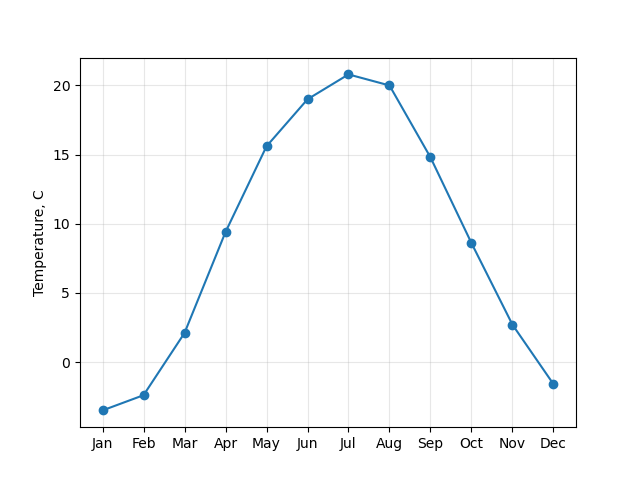
set_xticks задає, де стоять поділки, set_xticklabels — що на них написано. Кількість має збігатися.
Діаграма розсіювання: scatter¶
scatter малює окремі точки без ліній. Використовується, щоб побачити зв'язок двох величин.
import matplotlib.pyplot as plt
import numpy as np
rng = np.random.default_rng(42)
# години підготовки та бал за тест
hours = rng.uniform(0, 10, size=50)
score = 40 + 5 * hours + rng.normal(0, 6, size=50)
fig, ax = plt.subplots()
ax.scatter(hours, score)
ax.set(title="Study hours vs score", xlabel="Hours", ylabel="Score")
ax.grid(True, alpha=0.3)
plt.show()
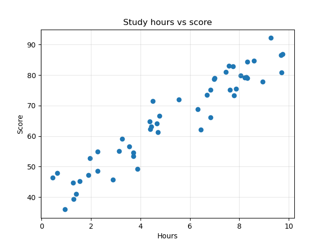
Хмара точок іде вгору — чим більше годин, тим вищий бал (додатна кореляція).
На відміну від plot, у scatter розмір s і колір c можна задати окремо для кожної точки — масивом:
import matplotlib.pyplot as plt
import numpy as np
rng = np.random.default_rng(42)
hours = rng.uniform(0, 10, size=50)
score = 40 + 5 * hours + rng.normal(0, 6, size=50)
passed = score >= 60
fig, ax = plt.subplots()
ax.scatter(hours[passed], score[passed], color="tab:green", label="passed")
ax.scatter(hours[~passed], score[~passed], color="tab:red", marker="x", label="failed")
ax.axhline(60, color="0.5", linestyle="--")
ax.set(title="Study hours vs score", xlabel="Hours", ylabel="Score")
ax.legend()
plt.show()
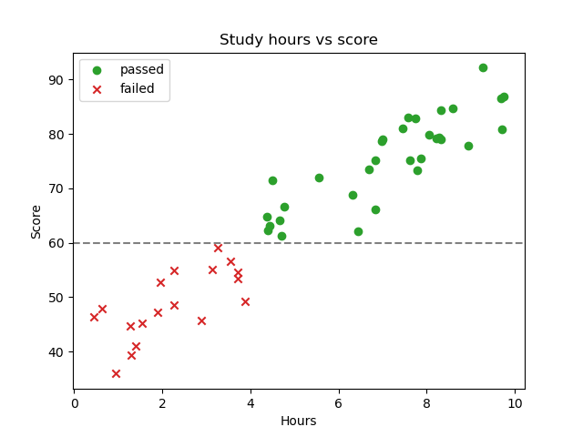
Тут працює булева індексація з лекції 27: hours[passed] — лише ті, хто склав. Групи відрізняються не тільки кольором, а й формою маркера — так графік читається і на чорно-білому друку.
Стовпчикова діаграма: bar і barh¶
bar порівнює значення між категоріями.
import matplotlib.pyplot as plt
languages = ["Python", "JavaScript", "Java", "C#", "C++"]
students = [42, 30, 18, 12, 9]
fig, ax = plt.subplots()
ax.bar(languages, students, color="tab:blue")
ax.set(title="Favourite language", ylabel="Students")
plt.show()
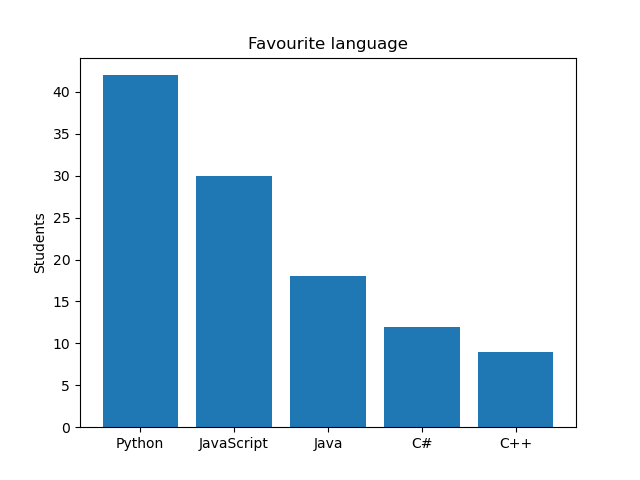
- перший аргумент — підписи категорій (рядки) або позиції
x; - другий — висота стовпчиків.
Значення над стовпчиками додає ax.bar_label:
import matplotlib.pyplot as plt
languages = ["Python", "JavaScript", "Java", "C#", "C++"]
students = [42, 30, 18, 12, 9]
fig, ax = plt.subplots()
bars = ax.bar(languages, students, color="tab:blue")
ax.bar_label(bars)
ax.set(title="Favourite language", ylabel="Students")
plt.show()
Коли підписів багато або вони довгі, зручніша горизонтальна діаграма barh:
import matplotlib.pyplot as plt
languages = ["Python", "JavaScript", "Java", "C#", "C++", "Go", "Rust", "Kotlin"]
students = [42, 30, 18, 12, 9, 7, 5, 4]
fig, ax = plt.subplots()
bars = ax.barh(languages, students, color="tab:blue")
ax.bar_label(bars, padding=3)
ax.invert_yaxis()
ax.set(title="Favourite language", xlabel="Students")
plt.show()
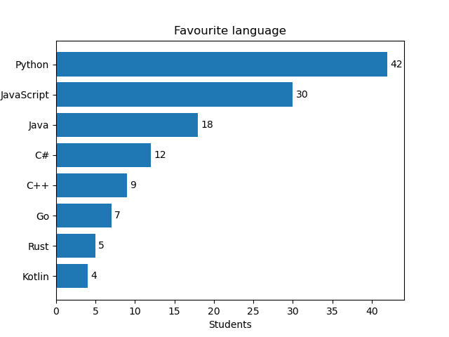
invert_yaxis() ставить перший елемент угорі — інакше barh малює знизу вгору, і найпопулярніша мова опиниться внизу.
Вісь стовпчиків починається з нуля
Довжина стовпчика — це і є значення. Якщо обрізати вісь (set_ylim(40, 45)), різниця 42 проти 41 виглядатиме як «удвічі більше». Для bar не змінюйте нижню межу осі значень.
Гістограма: hist¶
hist показує розподіл однієї величини: ділить діапазон на інтервали (bins) і малює, скільки значень потрапило в кожен. Це графічна версія np.histogram з лекції 30.
import matplotlib.pyplot as plt
import numpy as np
rng = np.random.default_rng(7)
heights = rng.normal(175, 7, size=1000)
fig, ax = plt.subplots()
ax.hist(heights, bins=30, color="tab:blue", edgecolor="white")
ax.axvline(heights.mean(), color="tab:red", linestyle="--", label="mean")
ax.set(title="Height of 1000 people", xlabel="Height, cm", ylabel="Count")
ax.legend()
plt.show()
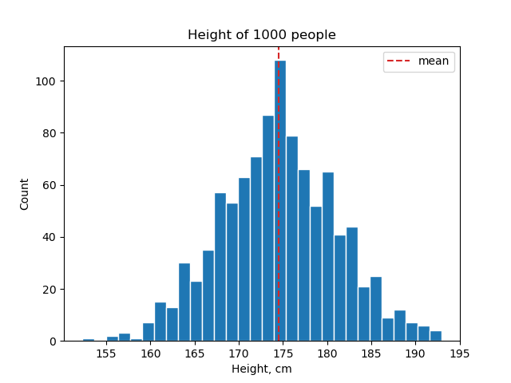
bins— кількість інтервалів (або масив меж). Замало — втрачається форма, забагато — «гребінка» з шуму;edgecolor="white"— тонка світла межа між стовпчиками.
bar чи hist?
bar — готові значення для категорій (мова → кількість студентів). hist — сирі числа, які треба спершу розкласти по інтервалах (1000 значень зросту). Стовпчики гістограми стоять впритул, бо інтервали неперервні.
hist повертає ті самі дані, що й np.histogram:
import matplotlib.pyplot as plt
import numpy as np
rng = np.random.default_rng(7)
heights = rng.normal(175, 7, size=1000)
fig, ax = plt.subplots()
counts, edges, patches = ax.hist(heights, bins=5)
print(counts)
print(edges.round(1))
plt.show()
counts — кількість значень у кожному з 5 інтервалів, edges — 6 меж інтервалів.
Кілька графіків на одній фігурі: subplots¶
plt.subplots(nrows, ncols) створює сітку Axes. Тоді axes — масив NumPy з об'єктами Axes:
import matplotlib.pyplot as plt
import numpy as np
x = np.linspace(0, 2 * np.pi, 100)
fig, axes = plt.subplots(2, 2)
print(type(axes), axes.shape)
axes[0, 0].plot(x, np.sin(x))
axes[0, 0].set_title("sin")
axes[0, 1].plot(x, np.cos(x), color="tab:orange")
axes[0, 1].set_title("cos")
axes[1, 0].plot(x, x ** 2, color="tab:green")
axes[1, 0].set_title("x^2")
axes[1, 1].plot(x, np.sqrt(x), color="tab:red")
axes[1, 1].set_title("sqrt(x)")
fig.suptitle("Four functions")
fig.tight_layout()
plt.show()
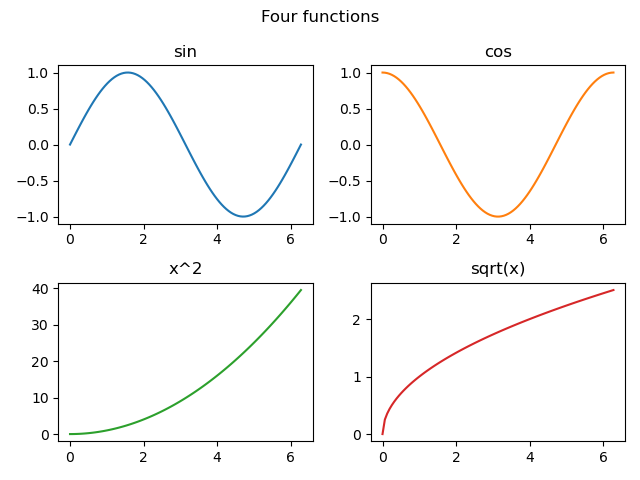
axes[row, col]— звичайна індексація двовимірного масиву;fig.suptitle— заголовок усієї фігури (на відміну відax.set_title— заголовка одного графіка);fig.tight_layout()— розсуває графіки, щоб підписи не накладалися.
Форма axes залежить від аргументів:
| Виклик | Що повертається в axes |
|---|---|
plt.subplots() |
один об'єкт Axes |
plt.subplots(1, 3) |
масив форми (3,) |
plt.subplots(3, 1) |
масив форми (3,) |
plt.subplots(2, 3) |
масив форми (2, 3) |
Для однакової обробки всіх графіків у циклі зручно «сплющити» масив через axes.flat:
import matplotlib.pyplot as plt
import numpy as np
rng = np.random.default_rng(1)
titles = ["uniform", "normal", "exponential", "dice"]
data = [
rng.uniform(0, 1, size=1000),
rng.normal(0, 1, size=1000),
rng.exponential(1, size=1000),
rng.integers(1, 7, size=1000),
]
fig, axes = plt.subplots(2, 2, figsize=(8, 6))
for ax, title, values in zip(axes.flat, titles, data):
ax.hist(values, bins=20, edgecolor="white")
ax.set_title(title)
fig.tight_layout()
plt.show()
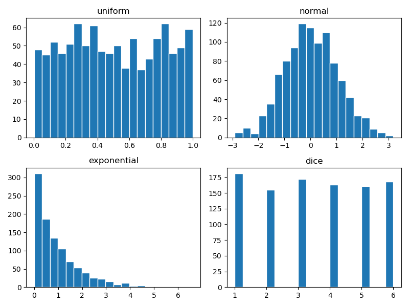
Спільні осі: sharex, sharey¶
Щоб порівнювати графіки, в них має бути однаковий масштаб. sharey=True робить вісь y спільною:
import matplotlib.pyplot as plt
months = [1, 2, 3, 4, 5, 6, 7, 8, 9, 10, 11, 12]
kyiv = [-3.5, -2.4, 2.1, 9.4, 15.6, 19.0, 20.8, 20.0, 14.8, 8.6, 2.7, -1.6]
odesa = [-0.9, -0.3, 3.4, 9.3, 15.5, 20.0, 22.8, 22.4, 17.3, 11.5, 5.9, 1.3]
fig, (ax1, ax2) = plt.subplots(1, 2, sharey=True, figsize=(9, 4))
ax1.bar(months, kyiv, color="tab:blue")
ax1.set_title("Kyiv")
ax2.bar(months, odesa, color="tab:orange")
ax2.set_title("Odesa")
ax1.set_ylabel("Temperature, C")
fig.tight_layout()
plt.show()
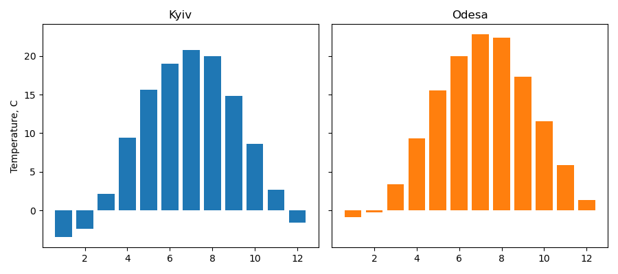
Зверніть увагу на розпакування fig, (ax1, ax2) = ... — масив із двох Axes одразу розкладається на дві змінні.
Розмір фігури та компонування¶
figsize=(width, height) — розмір фігури в дюймах. За замовчуванням (6.4, 4.8).
import matplotlib.pyplot as plt
fig, ax = plt.subplots(figsize=(10, 3))
ax.plot([1, 2, 3, 4, 5], [3, 1, 4, 1, 5])
plt.show()
Розмір у пікселях = дюйми × dpi (точок на дюйм). При dpi=100 фігура (10, 3) — це 1000×300 пікселів.
Замість fig.tight_layout() можна одразу створити фігуру з автоматичним компонуванням:
import matplotlib.pyplot as plt
fig, axes = plt.subplots(2, 2, layout="constrained")
for i, ax in enumerate(axes.flat):
ax.plot([0, 1], [0, i])
ax.set_title(f"Plot {i}")
ax.set_xlabel("x")
plt.show()
layout="constrained" — сучасніший механізм: він стежить за підписами, заголовками та легендами під час кожного перемальовування (наприклад, коли змінюєте розмір вікна).
Збереження у файл: savefig¶
import matplotlib.pyplot as plt
import numpy as np
x = np.linspace(0, 10, 200)
fig, ax = plt.subplots(figsize=(8, 4))
ax.plot(x, np.sin(x) * np.exp(-x / 5))
ax.set(title="Damped oscillation", xlabel="t, s", ylabel="Amplitude")
ax.grid(True, alpha=0.3)
fig.savefig("damped.png", dpi=150, bbox_inches="tight")
fig.savefig("damped.svg")
print("saved")
- формат визначається розширенням:
.png,.jpg,.svg,.pdf; dpi— роздільна здатність растрового файлу. Для звіту достатньо 150, для друку — 300;bbox_inches="tight"— обрізає зайві білі поля навколо графіка;- SVG і PDF — векторні: масштабуються без втрати якості, зручні для документів.
savefig — до show
Після того як вікно plt.show() закрите, фігура знищується. savefig після show збереже порожню картинку. Правильний порядок: спершу savefig, потім show.
Якщо графік потрібен лише у файлі (скрипт на сервері, генерація звіту), show не викликають. Щоб не накопичувати фігури в пам'яті в циклі, після збереження фігуру закривають:
import matplotlib.pyplot as plt
import numpy as np
rng = np.random.default_rng(0)
for i in range(3):
fig, ax = plt.subplots()
ax.hist(rng.normal(0, 1, size=500), bins=20)
fig.savefig(f"hist_{i}.png")
plt.close(fig)
print("done")
Приклад: аналіз оцінок групи¶
Повернемося до симуляції оцінок з лекції 30 і покажемо результат на одній фігурі з чотирма графіками.
import matplotlib.pyplot as plt
import numpy as np
rng = np.random.default_rng(42)
subjects = ["math", "physics", "python", "english"]
means = np.array([68, 65, 78, 74])
stds = np.array([12, 13, 10, 9])
# 30 студентів x 4 предмети
scores = rng.normal(loc=means, scale=stds, size=(30, 4))
scores = np.clip(np.round(scores), 0, 100).astype(int)
avg = scores.mean(axis=1)
fig, axes = plt.subplots(2, 2, figsize=(10, 7), layout="constrained")
# 1. середній бал по предметах
ax = axes[0, 0]
bars = ax.bar(subjects, scores.mean(axis=0), color="tab:blue")
ax.bar_label(bars, fmt="%.1f")
ax.set(title="Mean score by subject", ylabel="Score", ylim=(0, 100))
# 2. розподіл середнього балу студентів
ax = axes[0, 1]
ax.hist(avg, bins=10, color="tab:blue", edgecolor="white")
ax.axvline(60, color="tab:red", linestyle="--", label="pass threshold")
ax.set(title="Student average", xlabel="Average score", ylabel="Students", xlim=(40, 100))
ax.legend()
# 3. зв'язок математики та фізики
ax = axes[1, 0]
ax.scatter(scores[:, 0], scores[:, 1], color="tab:blue")
ax.set(title="Math vs physics", xlabel="Math", ylabel="Physics")
ax.grid(True, alpha=0.3)
# 4. бали студентів, відсортовані за середнім
ax = axes[1, 1]
order = np.argsort(avg)[::-1]
ax.plot(np.arange(1, 31), avg[order], marker="o", markersize=4)
ax.axhline(60, color="tab:red", linestyle="--")
ax.set(title="Ranking", xlabel="Place", ylabel="Average score", ylim=(40, 100))
ax.grid(True, alpha=0.3)
fig.suptitle("Group KI-31: exam results")
fig.savefig("grades_report.png", dpi=150)
plt.show()
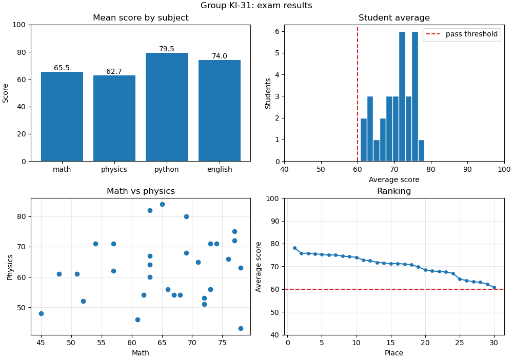
Що тут відбувається:
- вся обробка даних — NumPy (
mean(axis=...),argsort, булеві маски), matplotlib отримує вже готові масиви; - кожен з 4 графіків відповідає на одне питання: який предмет найважчий? скільки «на межі»? чи пов'язані предмети? хто лідер і хто відстає?
ylim=(0, 100)на стовпчиковій діаграмі — чесна шкала від нуля;np.argsort(avg)[::-1]— індекси студентів від найкращого до найгіршого.
Типові помилки¶
Немає plt.show(). Скрипт завершується, вікно не з'являється. У .py файлі show обов'язковий (якщо графік не зберігається у файл).
savefig після show. Зберігається порожня картинка. Спершу savefig, потім show.
Плутанина Axes і Axis. Axes — графік, Axis — вісь. Методи для малювання — в Axes.
ax.title("..."). У Axes немає методу title — лише ax.set_title("..."). Так само set_xlabel, set_ylabel, set_xlim. plt.title(...) без set_ — це pyplot-стиль.
axes.plot(...) для сітки графіків. Якщо fig, axes = plt.subplots(2, 2), то axes — масив, а не Axes. Потрібно axes[0, 0].plot(...).
axes[0, 0] для одного рядка. plt.subplots(1, 3) повертає одновимірний масив: axes[0], axes[1], axes[2]. axes[0, 0] дасть IndexError.
Змішування стилів. plt.title(...) після fig, axes = plt.subplots(2, 2) підпише лише останній створений Axes, а не той, який ви мали на увазі. В об'єктному стилі — лише методи ax.*.
legend() без label. Легенда порожня, в консолі попередження No artists with labels found to put in legend.
Різна довжина x і y. ValueError: x and y must have same first dimension. Перевіряйте shape масивів.
Графік без підписів. Графік без назви осей і одиниць вимірювання — це просто лінія. Завжди: заголовок, підписи осей з одиницями, легенда, якщо ліній кілька.
bar з обрізаною віссю. Стовпчикова діаграма з ylim, що не починається з нуля, спотворює пропорції.
Фігури в циклі без close. Сотні фігур, створених у циклі і збережених у файли, лишаються в пам'яті. plt.close(fig) після savefig.
Підсумок¶
- matplotlib — базова бібліотека графіків у Python; імпорт
import matplotlib.pyplot as plt. Figure— полотно;Axes— один графік з осями;Axis— одна вісь.fig, ax = plt.subplots()— стандартний початок; далі методиax.*(об'єктний стиль).ax.plot— лінії; параметриcolor,linestyle,linewidth,marker,label.ax.scatter— точки, зв'язок двох величин.ax.bar/ax.barh— порівняння категорій;ax.bar_label— значення над стовпчиками.ax.hist— розподіл однієї величини; параметрbins.set_title,set_xlabel,set_ylabel,set_xlim,set_ylim,set_xticksабо все разом черезax.set(...).ax.legend(),ax.grid(),ax.axhline()/ax.axvline().plt.subplots(nrows, ncols)— сітка графіків;axes— масив NumPy;sharex/sharey— спільний масштаб.figsize— розмір у дюймах;layout="constrained"абоfig.tight_layout()— компонування без накладань.fig.savefig("file.png", dpi=150, bbox_inches="tight")— збереження; доplt.show().
Корисні посилання¶
- matplotlib: Quick start guide
- Anatomy of a figure
Axes.plotpyplot.subplots- Галерея прикладів matplotlib
- Квартет Енскомба
Знайшли помилку чи бажаєте додати інформацію, щоб покращити курс? Створіть issue на GitHub